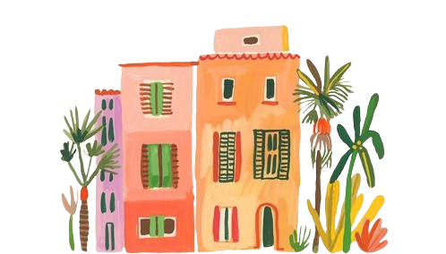
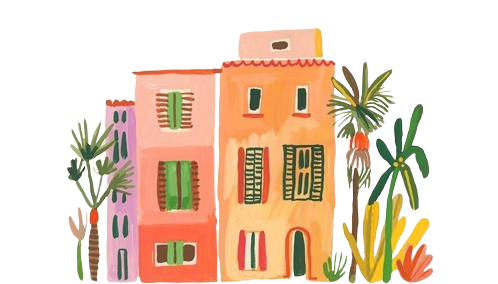
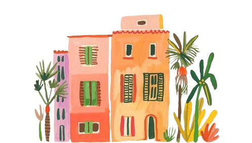
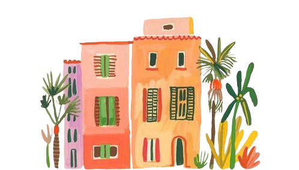

I am Saraya,
a Junior Web Developer.
.png) 




Living in Milan, Italy. I am currently working as a customer service specialist and learning about web development.
With over four years of experience in Customer Service and Customer Satisfation, I developed a great understanding on how to give the best service while keeping companies values high.
I have experience in different kinds of retail experiences. From small boutiques to luxury warehouses. Achieving targets has been always something that motivates me together with the trust given to me by store managers to run departments.
In the last year I have completed the 'The Fundamentals Of Digital Marketing' course from Google Digital Garage and the 'Social Media Marketing - Complete Certificate Course' from SoMe Academy on Udemy. Through these courses I have gained great understanding of Digital and Social Media Marketing.
I started this hobby in 2020 during the first quarantine with the goal to cut back on screentime and express my creativity. It has been such a great journey so far. I sold most of my creations on Etsy, which has given a great sense of satisfaction since I completely self-taught myself by trial and error.
I love discovering new places and to learn from diffirent cultures. I believe it creates a better understanding and increases creativity. The most beautiful place I have visited so far is definitely Bali but there are still many more places on my bucketlist.
Since there are so many cool subjects to learn about I motivate myself to regularly follow courses.Currently I am following a course named: The Complete 2022 Web Development Bootcamp teached by Angela Yu from the App Brewery. A couple of weeks ago I could not even imagine that I could create my own website from scratch... But here we are, you're looking at it right now!
If you have a project that you want to get started or think you need my help with something, then get in touch.
Send Me An Email